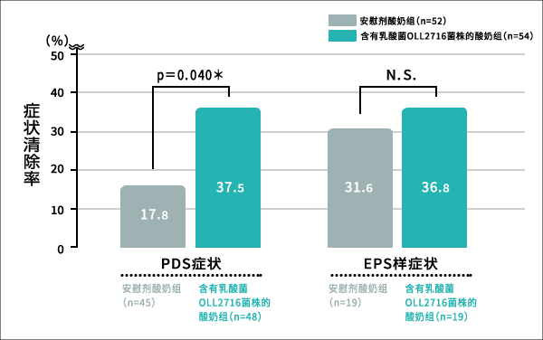

乳酸菌OLL2716株 实验结果（FD）
乳酸菌OLL2716株对FD症状的改善效果
①含乳酸菌OLL2716株的酸奶摄取组中有很多人回答“症状有所改善”或“改善很多”
将未接受治疗的20-64岁FD有症状患者106人随机分为两组，一组食用含乳酸菌OLL2716株（10亿个）的酸奶，另一组食用不含乳酸菌OLL2716株（安慰剂）的酸奶，一天1次（85g），食用12周。12周后就胃的症状问卷调查整体的效果印象。
其结果，食用12周含乳酸菌OLL2716株的酸奶组，与使用不含乳酸菌OLL2716株的酸奶组相比，胃的症状呈现改善倾向，整体的胃部症状“改善很多”或“有所改善”的人，含乳酸菌OLL2716株的酸奶摄取组要高出约16个百分点。
图 关于胃部症状改善的综合评价
（出典：Digestion 2017;96:92-102）
[评价方法]
在摄取实验食品12周后，询问试验对象：“与摄取前相比，最近一周您的胃部症状怎么样？”。
群间比较通过Wilcoxon秩和检验实施，将p<0.05作为有统计学意义，p<0.10作为有统计学倾向（† p<0.10 (双侧)）。
②12周后FD的4个症状全部消失的比率是摄取安慰剂酸奶群的2倍
另外，从酸奶摄取开始4周、8周、12周后观察FD的4个症状全部消失的人员比例（去除率），摄取期间越长，去除率越高，12周后含乳酸菌OLL2716株的酸奶群的去除率为35.2%，是安慰剂群17.3%的约2倍。
图 FD主要4症状所有的去除率经时变化
（出典：Digestion 2017;96:92-102）
[评价方法]
摄取前以及摄取实验食品4周后、8周后以及12周后，把经历了FD主要4症状全部消失的实验对象的比例作为去除率。
群间比较通过Wilcoxon秩和检验实施，p<0.05作为有统计学意义（* p<0.05 (双侧)）。
③在FD中尤其对“餐后不适综合症（PDS）”的效果很好
将FD中的两种类型“餐后不适综合征（PDS）”和“上腹痛综合征（EPS）”分开，对各自症状消失的比率从酸奶摄取12周后的观察来看，食用含乳酸菌OLL2716株的酸奶群中PDS症状的去除率显著提高具有统计学意义。

图 实验食品摄取12周后PDS及EPS般的症状的去除率
（出典：Digestion 2017;96:92-102）
[评价方法]
实验食品摄取开始前，以PDS类型的人为对象分析了PDS症状的去除率。
实验食品摄取开始前，以EPS般类型的人为对象分析了EPS般症状的去除率。
群间比较通过Fisher的确切概率检验实施，p<0.05作为有统计学意义（* p<0.05 (双侧)、N.S. 无明显差异）。